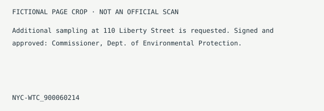

Fictional record examples. All readings, entities, dates and activity are fixtures. Real collection totals: 24,436 PDFs · 172,537 pages. City 9/11 records only.
Signatories by role/ Official capacity only
Role → action → record
Commissioner,
Dept. of Environmental Protection
Agency: Dept. of Environmental Protection · October 9, 2001
Machine-extracted role and date · confidence 0.89 · NYC-WTC_900060214 ↗
This page describes an official role on a fixture record. Appearance implies nothing about the role holder. No private identities or person-to-person associations are indexed.
Actions on the record
Signed · 1 page
Additional sampling request · October 9, 2001
NYC-WTC_900060214 ↗
Approved · 1 page
Same memo, approved for issue; one record with two actions.
NYC-WTC_900060214 ↗Analyzed / certified / cc’d
No fixture records for this official in these action groups.